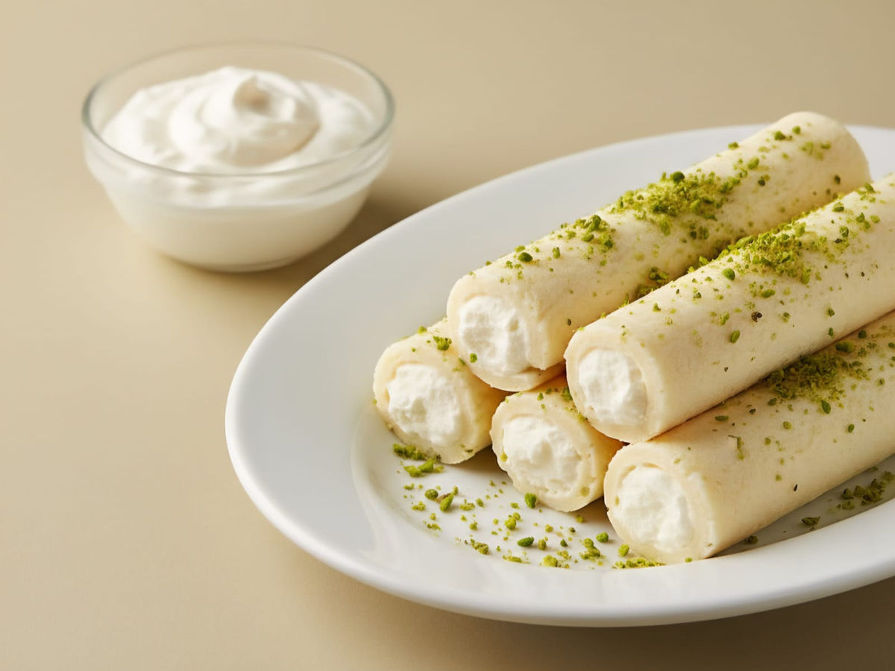

دمشق
Damaskus
Syriens Hauptstadt. Aus dem alten Viertel al-Midan stammen die hauchdünnen Barazek mit Sesam und Pistazien.
Barazek · Ghraybeh · MaamoulSyrian Star · Schustergasse 14 · Darmstadt
Treten Sie an unsere Theke: Künefe, Baklava, Mabrumeh & mehr – frisch, mit Aleppo-Pistazien und viel Liebe gemacht.
Runterscrollen, um an die Theke zu treten
Ziehen zum Drehen
Woher unsere Rezepte kommen
Syriens Hauptstadt. Aus dem alten Viertel al-Midan stammen die hauchdünnen Barazek mit Sesam und Pistazien.
Barazek · Ghraybeh · Maamoul
Die Stadt der Pistazien. Die kleine, tiefgrüne Aleppo-Pistazie (Halabi) steckt in Mabrumeh, Baklava und den Nestern.
Mabrumeh · Baklava · Nester
Die Stadt am Orontes ist berühmt für Halawet el Jibn: zarter Käse-Grieß-Teig, gefüllt mit Sahnecreme.
Halawet el JibnUnser Star: Künefe كنافة
Künefe (arabisch Knafeh) ist das Herz der syrischen Süßspeisen: knusprige Teigfäden, schmelzender Käse, Sirup und Pistazien – warm aus dem Blech. Scrollen Sie mit: Schicht für Schicht entsteht ein Stück.
Feiner Kadayif wird mit warmem Butterschmalz (Samneh) vermengt und in das runde Blech gedrückt.
Entsalzter Akkawi- oder Nabulsi-Käse kommt darauf – mild, leicht salzig und er zieht lange Fäden.
Über der Flamme, bis der Boden goldbraun ist – dann wird das Blech gestürzt. Knafeh bin Narein bekommt zusätzlich oben eine zweite Teigschicht.
Heiß mit Ater (Zuckersirup mit Zitrone & Rosenwasser) getränkt, dann gehackte Pistazien darüber. Fertig – am besten sofort, solange der Käse zieht.
Bei uns als Knafeh Nabulsi (fein) und Knafeh bin Narein (grob) – Preise in der Speisekarte.
Das Süßigkeiten-Lexikon
Viele unserer Spezialitäten kennt man in Deutschland noch nicht. Jede Karte zeigt, wie die Sorte aussieht und was drin ist. Antippen für die ganze Geschichte, Preise und Bestellung.
Kleines Wörterbuch
Zum Mitnehmen & Verschenken
Sorten antippen, Größe wählen, per WhatsApp vorbestellen – wir packen Ihre gemischte Schale frisch, zum Abholen in der Schustergasse.
 Für Ihren besonderen Tag
Torten & Kuchen auf Bestellung
Für Geburtstage, Feiern und besondere Anlässe – in drei Größen. Mehr in der Speisekarte →
Für Ihren besonderen Tag
Torten & Kuchen auf Bestellung
Für Geburtstage, Feiern und besondere Anlässe – in drei Größen. Mehr in der Speisekarte →
Besuchen Sie uns